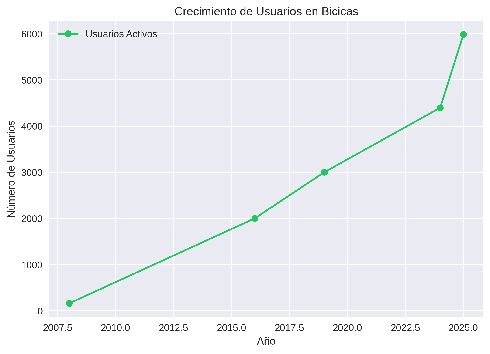
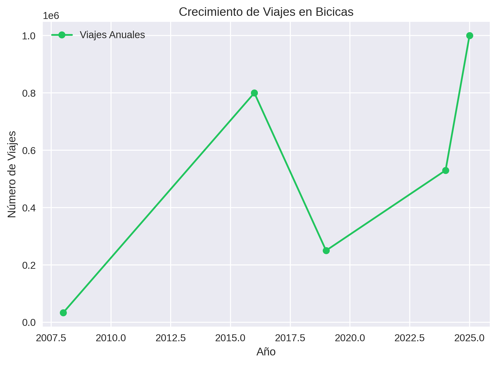
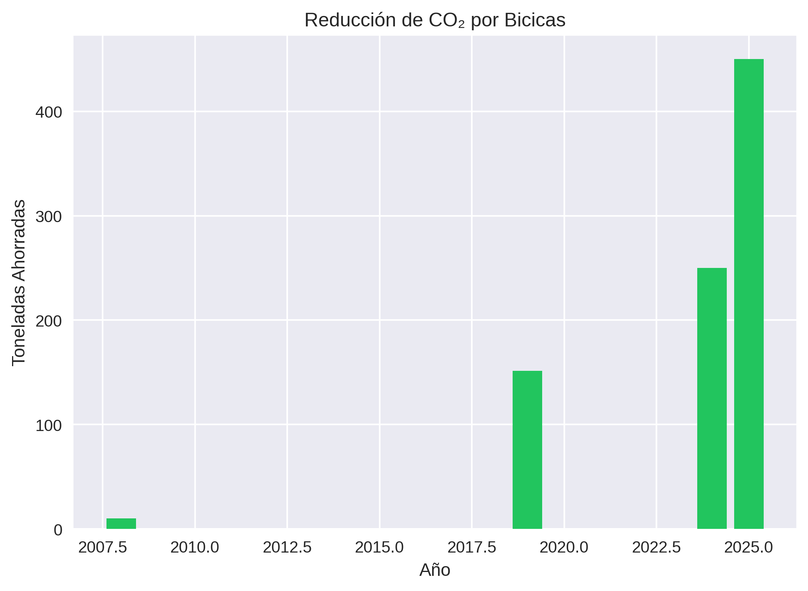
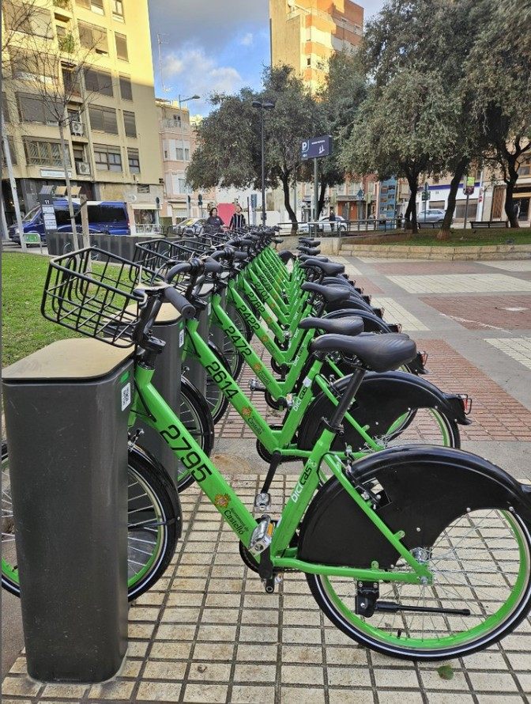
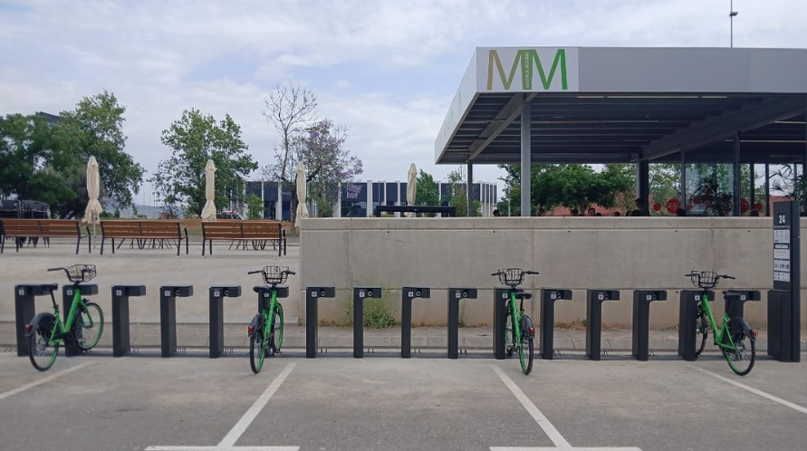
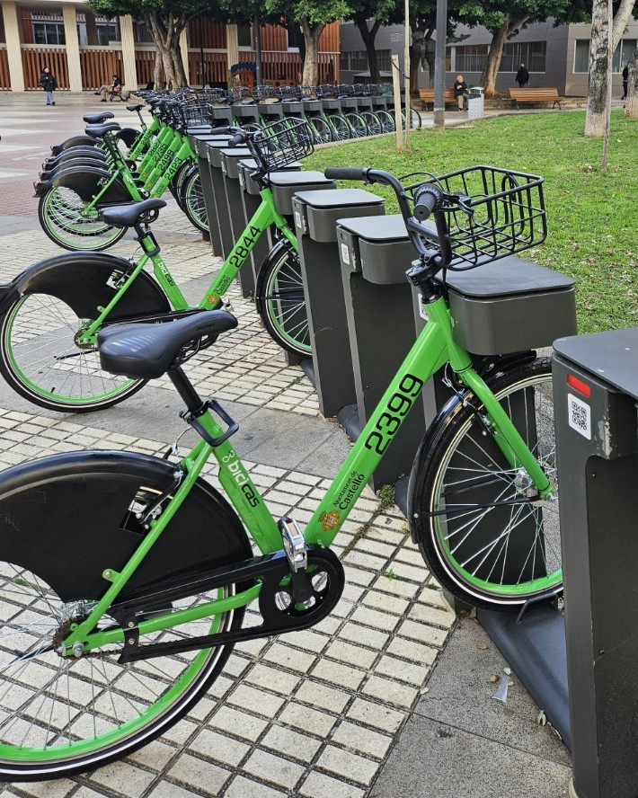

Introducción al Proyecto
En MoviBike, transformamos la movilidad urbana con soluciones globales. Con 12 años de experiencia y un equipo de 8 especialistas, ofrecemos bicicletas de última generación, estaciones inteligentes y una plataforma tecnológica para gestionar servicios de movilidad compartida. El proyecto Bicicas en Castellón de la Plana, iniciado en 2008, es un ejemplo de nuestro trabajo: desde estudios de movilidad hasta la implementación de un sistema con 60 estaciones (ampliándose a 64) y 600 bicicletas, incluyendo 8 eléctricas. En 2025, gestionamos una transición fluida a un nuevo sistema sin interrupciones, integrando infraestructura y tecnología existente.
Nuestro Servicio 360°: Tu Socio de Confianza en Movilidad
Entendemos que la transición a un sistema de bikesharing puede parecer compleja, especialmente sin experiencia previa en el sector. En MoviBike, hemos diseñado nuestro servicio 360° para eliminar esa incertidumbre y garantizar tu éxito. No somos un simple proveedor; somos tu socio estratégico a largo plazo. Te acompañamos en cada paso, desde el primer boceto hasta la gestión diaria del sistema, asegurando que nunca te sientas solo en este viaje.
- 1. Estudio de Movilidad y Planificación Estratégica: Antes de instalar una sola bicicleta, nuestro equipo de expertos realiza un análisis exhaustivo de tu ciudad. Identificamos las rutas más transitadas, los puntos de interés y las necesidades específicas de tus ciudadanos. El resultado es un plan a medida que define el número óptimo de bicicletas y estaciones, su ubicación estratégica y proyecciones de uso realistas. Nos aseguramos de que la solución sea la correcta para ti, no una solución genérica.
- 2. Diseño y Fabricación con Estándares Abiertos: Sabemos por experiencia que uno de los mayores problemas en el sector son las bicicletas con piezas exclusivas y difíciles de encontrar. Por eso, nuestro enfoque es radicalmente diferente. Diseñamos bicicletas robustas y duraderas, pero con un principio clave: utilizamos componentes estándar de la industria del ciclismo. Esto significa que las reparaciones son más rápidas, más económicas y no dependes de un único proveedor para el mantenimiento. Es una garantía de autonomía y control de costes a largo plazo.
- 3. Acompañamiento Total en la Instalación: No te entregamos un manual y te deseamos suerte. Nuestro equipo se desplaza y trabaja codo a codo contigo durante toda la fase de instalación. Coordinamos la logística, gestionamos los permisos, montamos las estaciones y realizamos pruebas exhaustivas. Además, formamos a tu personal para que se conviertan en expertos en la gestión del sistema, desde la operativa diaria hasta el uso de nuestra tecnología de seguimiento.
- 4. Soporte y Mantenimiento Continuo y Garantizado: Un sistema de bikesharing es un organismo vivo que necesita atención constante. Ofrecemos un servicio de mantenimiento proactivo y garantizado por contrato. Nuestro equipo realiza un monitoreo digital constante para anticipar incidencias, y nuestros vehículos de mantenimiento eléctricos están siempre listos para actuar. Garantizamos la disponibilidad de recambios y un servicio técnico que responde, para que el sistema funcione con la máxima eficiencia, 24/7.
- 5. Optimización y Crecimiento Conjunto: El lanzamiento es solo el principio. Analizamos continuamente los datos de uso para proponerte mejoras, como la reubicación de estaciones para cubrir nuevas demandas o la expansión del servicio. Celebramos tus éxitos como nuestros y te ayudamos a hacer crecer el sistema de forma sostenible.
Con MoviBike, no solo estás comprando bicicletas; estás invirtiendo en un servicio completo de acompañamiento y soporte que te da la tranquilidad y la confianza para transformar la movilidad de tu ciudad.
Estudio de Movilidad
Analizamos los patrones de movilidad en Castellón, considerando puntos clave como la universidad, la estación de tren, el hospital, la playa y el centro histórico. Identificamos rutas principales (e.g., Grupo Lourdes a avenida Ferrandis Salvador, ~42 min en bicicleta) y diseñamos una red modular.
- Iniciado con 6 estaciones y 140 bicicletas en 2008.
- Actualmente: 60 estaciones, con 4 más planificadas (e.g., cerca de la playa).
- Infraestructura: ~100 km de carriles bici, líder en España.
Ver Mapa de Estaciones
Mapa Interactivo
Diseño de la Bicicleta: Robustez y Mantenimiento Inteligente
Una bicicleta de bikesharing debe ser, ante todo, fiable. Nuestros diseños se centran en la durabilidad y en un mantenimiento sencillo y económico, dos factores clave para el éxito a largo plazo de cualquier sistema.
- Robustez a toda prueba: Cada bicicleta está construida con una estructura reforzada, un 16% más ligera que los modelos convencionales pero mucho más resistente. Están diseñadas para soportar el uso intensivo diario, el vandalismo y las condiciones climáticas más exigentes, como el sol y el salitre del clima mediterráneo.
- La clave: Componentes estándar: Aquí es donde marcamos la diferencia. Evitamos a toda costa las piezas "propietarias" o difíciles de conseguir. Todas nuestras bicicletas se ensamblan con componentes de alta calidad y estándar en la industria del ciclismo. Esto se traduce en tres grandes ventajas para ti:
- Reparaciones rápidas: Tu equipo de mantenimiento podrá encontrar repuestos fácilmente en proveedores locales.
- Costes controlados: No estarás atado a un único proveedor y sus precios.
- Autonomía de gestión: Tienes el control total sobre el mantenimiento de tu flota.
- Diseño pensado para el usuario: Incluimos cestas de gran capacidad, asientos ajustables para todas las estaturas y ruedas antipinchazos que minimizan las incidencias. Además, ofrecemos modelos de bicicletas eléctricas para garantizar la accesibilidad a personas con movilidad reducida o para trayectos más exigentes.
- Sostenibilidad en la operación: Nuestro compromiso con el medio ambiente va más allá de las bicicletas. Los vehículos que utilizamos para el mantenimiento de la flota son 100% eléctricos, cerrando el círculo de una operación de movilidad totalmente sostenible.
Implementación y Contrato Marco: Tu Tranquilidad a Largo Plazo
La implementación de un sistema de bikesharing es una inversión importante. Por eso, hemos diseñado un proceso de despliegue y un contrato marco que te ofrecen la máxima seguridad y garantía de futuro.
- Tecnología Accesible y Abierta: Nuestras 60 estaciones modulares están equipadas con códigos QR para un acceso rápido y sencillo a través de nuestra aplicación móvil (disponible para iOS y Android). La tecnología es intuitiva para el usuario y potente para el gestor.
- Contrato Marco: Suministro y Soporte Garantizados: Para tu total tranquilidad, nuestro contrato marco asegura el suministro continuo de todo lo que necesitas. Esto incluye un mínimo de 100 bicicletas nuevas cada año, estaciones adicionales según la demanda y, lo más importante, la disponibilidad garantizada de todos los recambios originales. Con nosotros, nunca te enfrentarás a la incertidumbre de no encontrar una pieza.
- Transición sin Sobresaltos: Nuestra experiencia, como en la transición del sistema de Castellón en 2025, nos permite garantizar una implementación o actualización de infraestructura sin interrupciones en el servicio. Nos encargamos de todo para que los usuarios no noten el cambio, más que para mejor. Integramos los sistemas existentes y aseguramos una transición fluida y profesional.
Resultados y Crecimiento
Bicicas ha crecido significativamente desde 2008:


Usuarios: De 160 en 2008 a 5.982 en junio de 2025 (proyección: 7.000).
Viajes: De 32.813 en 2008 a 530.000 en 2024 (proyección 2025: 1 millón).
Impacto Ambiental
Bicicas ha reducido significativamente las emisiones de CO₂:

Reducción de CO₂: 151,44 toneladas en 2019, ~250 en 2024, proyección 2025: ~450 toneladas.
Galería

Estación Bicicas (No disponible)

Bicicletas en Castellón (No disponible)

Vista de Estación (No disponible)
Más imágenes en Instagram de Bicicas.